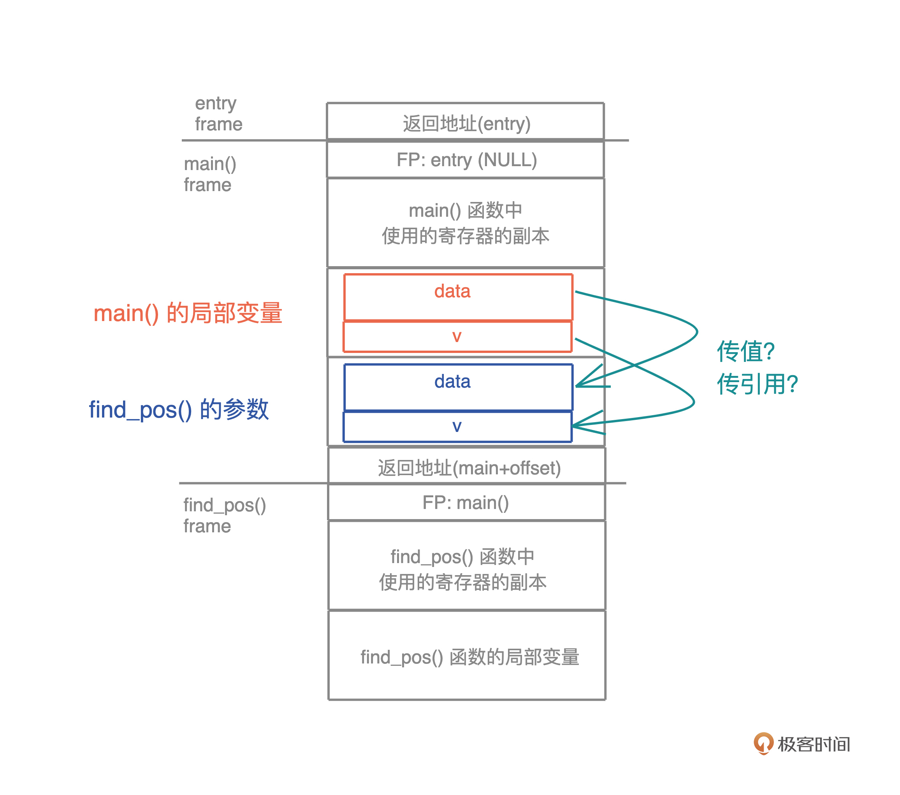
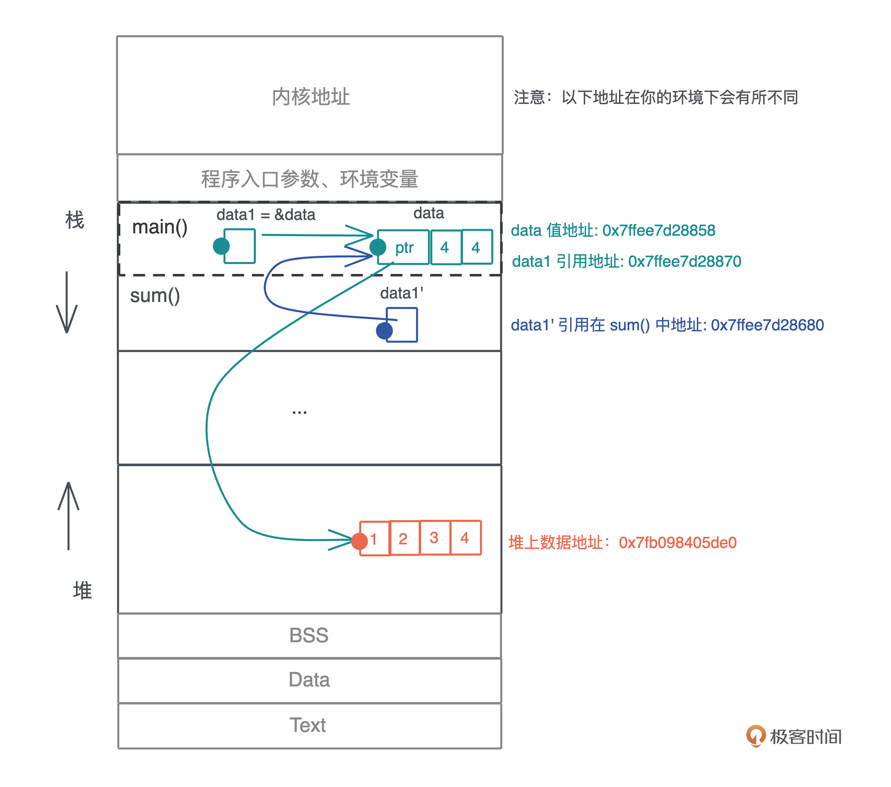
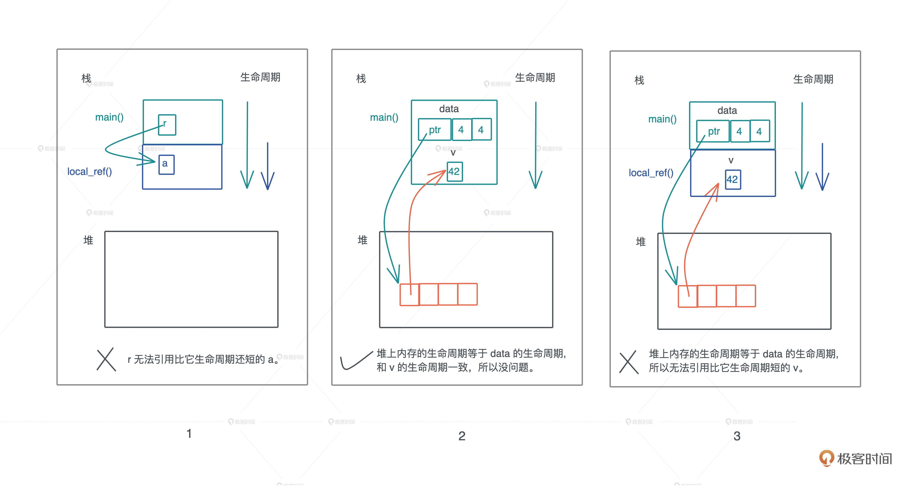
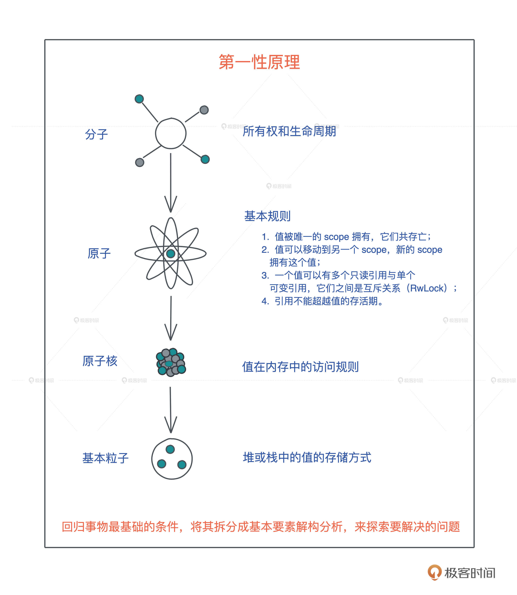
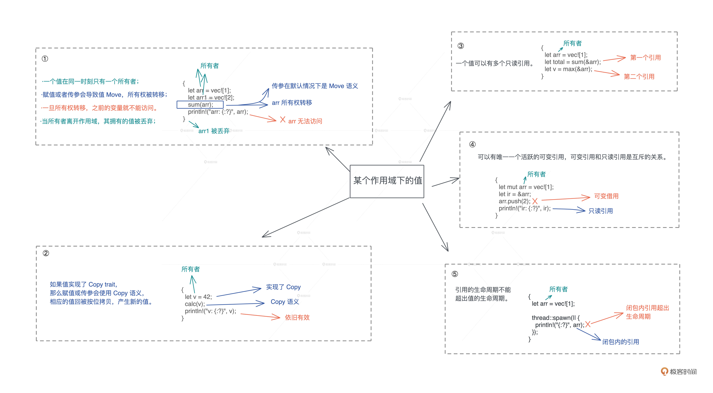

- 00 开篇词 让Rust成为你的下一门主力语言.md
- 01 内存：值放堆上还是放栈上，这是一个问题.md
- 02 串讲：编程开发中，那些你需要掌握的基本概念.md
- 03 初窥门径：从你的第一个Rust程序开始！.md
- 04 get hands dirty：来写个实用的CLI小工具.md
- 05 get hands dirty：做一个图片服务器有多难？.md
- 06 get hands dirty：SQL查询工具怎么一鱼多吃？.md
- 07 所有权：值的生杀大权到底在谁手上？.md
- 08 所有权：值的借用是如何工作的？.md
- 09 所有权：一个值可以有多个所有者么？.md
- 10 生命周期：你创建的值究竟能活多久？.md
- 11 内存管理：从创建到消亡，值都经历了什么？.md
- 12 类型系统：Rust的类型系统有什么特点？.md
- 13 类型系统：如何使用trait来定义接口？.md
- 14 类型系统：有哪些必须掌握的trait？.md
- 15 数据结构：这些浓眉大眼的结构竟然都是智能指针？.md
- 16 数据结构：Vec_T、&[T]、Box[T]_ ，你真的了解集合容器么？.md
- 17 数据结构：软件系统核心部件哈希表，内存如何布局？.md
- 18 错误处理：为什么Rust的错误处理与众不同？.md
- 19 闭包：FnOnce、FnMut和Fn，为什么有这么多类型？.md
- 20 4 Steps ：如何更好地阅读Rust源码？.md
- 21 阶段实操（1）：构建一个简单的KV server-基本流程.md
- 22 阶段实操（2）：构建一个简单的KV server-基本流程.md
- 23 类型系统：如何在实战中使用泛型编程？.md
- 24 类型系统：如何在实战中使用trait object？.md
- 25 类型系统：如何围绕trait来设计和架构系统？.md
- 26 阶段实操（3）：构建一个简单的KV server-高级trait技巧.md
- 27 生态系统：有哪些常有的Rust库可以为我所用？.md
- 28 网络开发（上）：如何使用Rust处理网络请求？.md
- 29 网络开发（下）：如何使用Rust处理网络请求？.md
- 30 Unsafe Rust：如何用C++的方式打开Rust？.md
- 31 FFI：Rust如何和你的语言架起沟通桥梁？.md
- 32 实操项目：使用PyO3开发Python3模块.md
- 33 并发处理（上）：从atomics到Channel，Rust都提供了什么工具？.md
- 34 并发处理（下）：从atomics到Channel，Rust都提供了什么工具？.md
- 35 实操项目：如何实现一个基本的MPSC channel？.md
- 36 阶段实操（4）：构建一个简单的KV server-网络处理.md
- 37 阶段实操（5）：构建一个简单的KV server-网络安全.md
- 38 异步处理：Future是什么？它和async_await是什么关系？.md
- 39 异步处理：async_await内部是怎么实现的？.md
- 40 异步处理：如何处理异步IO？.md
- 41 阶段实操（6）：构建一个简单的KV server-异步处理.md
- 42 阶段实操（7）：构建一个简单的KV server-如何做大的重构？.md
- 43 生产环境：真实世界下的一个Rust项目包含哪些要素？.md
- 44 数据处理：应用程序和数据如何打交道？.md
- 45 阶段实操（8）：构建一个简单的KV server-配置_测试_监控_CI_CD.md
- 46 软件架构：如何用Rust架构复杂系统？.md
- 加餐 Rust2021版次问世了！.md
- 加餐 代码即数据：为什么我们需要宏编程能力？.md
- 加餐 宏编程（上）：用最“笨”的方式撰写宏.md
- 加餐 宏编程（下）：用 syn_quote 优雅地构建宏.md
- 加餐 愚昧之巅：你的Rust学习常见问题汇总.md
- 加餐 期中测试：参考实现讲解.md
- 加餐 期中测试：来写一个简单的grep命令行.md
- 加餐 这个专栏你可以怎么学，以及Rust是否值得学？.md
- 大咖助场 开悟之坡（上）：Rust的现状、机遇与挑战.md
- 大咖助场 开悟之坡（下）：Rust的现状、机遇与挑战.md
- 特别策划 学习锦囊（一）：听听课代表们怎么说.md
- 特别策划 学习锦囊（三）：听听课代表们怎么说.md
- 特别策划 学习锦囊（二）：听听课代表们怎么说.md
- 用户故事 绝望之谷：改变从学习开始.md
- 用户故事 语言不仅是工具，还是思维方式.md
- 结束语 永续之原：Rust学习，如何持续精进？.md
08 所有权：值的借用是如何工作的？
你好，我是陈天。
上一讲我们学习了 Rust 所有权的基本规则，在 Rust 下，值有单一的所有者。
当我们进行变量赋值、传参和函数返回时，如果涉及的数据结构没有实现 Copy trait，就会默认使用 Move 语义转移值的所有权，失去所有权的变量将无法继续访问原来的数据；如果数据结构实现了 Copy trait，就会使用 Copy 语义，自动把值复制一份，原有的变量还能继续访问。
虽然，单一所有权解决了其它语言中值被任意共享带来的问题，但也引发了一些不便。我们上一讲提到：当你不希望值的所有权被转移，又因为没有实现 Copy trait 而无法使用 Copy 语义，怎么办？你可以“借用”数据，也就是这一讲我们要继续介绍的 Borrow 语义。
Borrow 语义
顾名思义，Borrow 语义允许一个值的所有权，在不发生转移的情况下，被其它上下文使用。就好像住酒店或者租房那样，旅客/租客只有房间的临时使用权，但没有它的所有权。另外，Borrow 语义通过引用语法（& 或者 &mut）来实现。
看到这里，你是不是有点迷惑了，怎么引入了一个“借用”的新概念，但是又写“引用”语法呢？
其实，在 Rust 中，“借用”和“引用”是一个概念，只不过在其他语言中引用的意义和 Rust 不同，所以 Rust 提出了新概念“借用”，便于区分。
在其他语言中，引用是一种别名，你可以简单理解成鲁迅之于周树人，多个引用拥有对值的无差别的访问权限，本质上是共享了所有权；而在 Rust 下，所有的引用都只是借用了“临时使用权”，它并不破坏值的单一所有权约束。
因此默认情况下，Rust 的借用都是只读的，就好像住酒店，退房时要完好无损。但有些情况下，我们也需要可变的借用，就像租房，可以对房屋进行必要的装饰，这一点待会详细讲。
所以，如果我们想避免 Copy 或者 Move，可以使用借用，或者说引用。
只读借用/引用
本质上，引用是一个受控的指针，指向某个特定的类型。在学习其他语言的时候，你会注意到函数传参有两种方式：传值（pass-by-value）和传引用（pass-by-reference）。

以 Java 为例，给函数传一个整数，这是传值，和 Rust 里的 Copy 语义一致；而给函数传一个对象，或者任何堆上的数据结构，Java 都会自动隐式地传引用。刚才说过，Java 的引用是对象的别名，这也导致随着程序的执行，同一块内存的引用到处都是，不得不依赖 GC 进行内存回收。
但 Rust 没有传引用的概念，Rust 所有的参数传递都是传值，不管是 Copy 还是 Move。所以在Rust中，你必须显式地把某个数据的引用，传给另一个函数。
Rust 的引用实现了 Copy trait，所以按照 Copy 语义，这个引用会被复制一份交给要调用的函数。对这个函数来说，它并不拥有数据本身，数据只是临时借给它使用，所有权还在原来的拥有者那里。
在 Rust里，引用是一等公民，和其他数据类型地位相等。
还是用上一讲有两处错误的 代码2 来演示。
fn main() {
let data = vec![1, 2, 3, 4];
let data1 = data;
println!("sum of data1: {}", sum(data1));
println!("data1: {:?}", data1); // error1
println!("sum of data: {}", sum(data)); // error2
}
fn sum(data: Vec<u32>) -> u32 {
data.iter().fold(0, |acc, x| acc + x)
}
我们把 代码2 稍微改变一下，通过添加引用，让编译通过，并查看值和引用的地址（代码3）：
fn main() {
let data = vec![1, 2, 3, 4];
let data1 = &data;
// 值的地址是什么？引用的地址又是什么？
println!(
"addr of value: {:p}({:p}), addr of data {:p}, data1: {:p}",
&data, data1, &&data, &data1
);
println!("sum of data1: {}", sum(data1));
// 堆上数据的地址是什么？
println!(
"addr of items: [{:p}, {:p}, {:p}, {:p}]",
&data[0], &data[1], &data[2], &data[3]
);
}
fn sum(data: &Vec<u32>) -> u32 {
// 值的地址会改变么？引用的地址会改变么？
println!("addr of value: {:p}, addr of ref: {:p}", data, &data);
data.iter().fold(0, |acc, x| acc + x)
}
在运行这段代码之前，你可以先思考一下，data 对应值的地址是否保持不变，而 data1 引用的地址，在传给 sum() 函数后，是否还指向同一个地址。
好，如果你有想法了，可以再运行代码验证一下你是否正确，我们再看下图分析：

data1、&data 和传到 sum() 里的 data1’ 都指向 data 本身，这个值的地址是固定的。但是它们引用的地址都是不同的，这印证了我们讲 Copy trait 的时候，介绍过只读引用实现了 Copy trait，也就意味着引用的赋值、传参都会产生新的浅拷贝。
虽然 data 有很多只读引用指向它，但堆上的数据依旧只有 data 一个所有者，所以值的任意多个引用并不会影响所有权的唯一性。
但我们马上就发现了新问题：一旦 data 离开了作用域被释放，如果还有引用指向 data，岂不是造成我们想极力避免的使用已释放内存（use after free）这样的内存安全问题？怎么办呢？
借用的生命周期及其约束
所以，我们对值的引用也要有约束，这个约束是：借用不能超过（outlive）值的生存期。
这个约束很直观，也很好理解。在上面的代码中，sum() 函数处在 main() 函数下一层调用栈中，它结束之后 main() 函数还会继续执行，所以在 main() 函数中定义的 data 生命周期要比 sum() 中对 data 的引用要长，这样不会有任何问题。
但如果是这样的代码呢（情况1）？
fn main() {
let r = local_ref();
println!("r: {:p}", r);
}
fn local_ref<'a>() -> &'a i32 {
let a = 42;
&a
}
显然，生命周期更长的 main() 函数变量 r ，引用了生命周期更短的 local_ref() 函数里的局部变量，这违背了有关引用的约束，所以 Rust 不允许这样的代码编译通过。
那么，如果我们在堆内存中，使用栈内存的引用，可以么？
根据过去的开发经验，你也许会脱口而出：不行！因为堆内存的生命周期显然比栈内存要更长更灵活，这样做内存不安全。
我们写段代码试试看，把一个本地变量的引用存入一个可变数组中。从基础知识的学习中我们知道，可变数组存放在堆上，栈上只有一个胖指针指向它，所以这是一个典型的把栈上变量的引用存在堆上的例子（情况2）：
fn main() {
let mut data: Vec<&u32> = Vec::new();
let v = 42;
data.push(&v);
println!("data: {:?}", data);
}
竟然编译通过，怎么回事？我们变换一下，看看还能编译不（情况3），又无法通过了！
fn main() {
let mut data: Vec<&u32> = Vec::new();
push_local_ref(&mut data);
println!("data: {:?}", data);
}
fn push_local_ref(data: &mut Vec<&u32>) {
let v = 42;
data.push(&v);
}
到这里，你是不是有点迷糊了，这三种情况，为什么同样是对栈内存的引用，怎么编译结果都不一样？
这三段代码看似错综复杂，但如果抓住了一个核心要素“在一个作用域下，同一时刻，一个值只能有一个所有者”，你会发现，其实很简单。
堆变量的生命周期不具备任意长短的灵活性，因为堆上内存的生死存亡，跟栈上的所有者牢牢绑定。而栈上内存的生命周期，又跟栈的生命周期相关，所以我们核心只需要关心调用栈的生命周期。
现在你是不是可以轻易判断出，为什么情况 1 和情况 3 的代码无法编译通过了，因为它们引用了生命周期更短的值，而情况2 的代码虽然在堆内存里引用栈内存，但生命周期是相同的，所以没有问题。

好，到这里，默认情况下，Rust 的只读借用就讲完了，借用者不能修改被借用的值，简单类比就像住酒店，只有使用权。
但之前也提到，有些情况下，我们也需要可变借用，想在借用的过程中修改值的内容，就像租房，需要对房屋进行必要的装饰。
可变借用/引用
在没有引入可变借用之前，因为一个值同一时刻只有一个所有者，所以如果要修改这个值，只能通过唯一的所有者进行。但是，如果允许借用改变值本身，会带来新的问题。
我们先看第一种情况，多个可变引用共存：
fn main() {
let mut data = vec![1, 2, 3];
for item in data.iter_mut() {
data.push(*item + 1);
}
}
这段代码在遍历可变数组 data 的过程中，还往 data 里添加新的数据，这是很危险的动作，因为它破坏了循环的不变性（loop invariant），容易导致死循环甚至系统崩溃。所以，在同一个作用域下有多个可变引用，是不安全的。
由于 Rust 编译器阻止了这种情况，上述代码会编译出错。我们可以用 Python 来体验一下多个可变引用可能带来的死循环：
if __name__ == "__main__":
data = [1, 2]
for item in data:
data.append(item + 1)
print(item)
# unreachable code
print(data)
同一个上下文中多个可变引用是不安全的，那如果同时有一个可变引用和若干个只读引用，会有问题吗？我们再看一段代码：
fn main() {
let mut data = vec![1, 2, 3];
let data1 = vec![&data[0]];
println!("data[0]: {:p}", &data[0]);
for i in 0..100 {
data.push(i);
}
println!("data[0]: {:p}", &data[0]);
println!("boxed: {:p}", &data1);
}
在这段代码里，不可变数组 data1 引用了可变数组 data 中的一个元素，这是个只读引用。后续我们往 data 中添加了 100 个元素，在调用 data.push() 时，我们访问了 data 的可变引用。
这段代码中，data 的只读引用和可变引用共存，似乎没有什么影响，因为 data1 引用的元素并没有任何改动。
如果你仔细推敲，就会发现这里有内存不安全的潜在操作：如果继续添加元素，堆上的数据预留的空间不够了，就会重新分配一片足够大的内存，把之前的值拷过来，然后释放旧的内存。这样就会让 data1 中保存的 &data[0] 引用失效，导致内存安全问题。
Rust的限制
多个可变引用共存、可变引用和只读引用共存这两种问题，通过 GC 等自动内存管理方案可以避免第二种，但是第一个问题 GC 也无济于事。
所以为了保证内存安全，Rust 对可变引用的使用也做了严格的约束：
- 在一个作用域内，仅允许一个活跃的可变引用。所谓活跃，就是真正被使用来修改数据的可变引用，如果只是定义了，却没有使用或者当作只读引用使用，不算活跃。
- 在一个作用域内，活跃的可变引用（写）和只读引用（读）是互斥的，不能同时存在。
这个约束你是不是觉得看上去似曾相识？对，它和数据在并发下的读写访问（比如 RwLock）规则非常类似，你可以类比学习。
从可变引用的约束我们也可以看到，Rust 不光解决了 GC 可以解决的内存安全问题，还解决了 GC 无法解决的问题。在编写代码的时候， Rust 编译器就像你的良师益友，不断敦促你采用最佳实践来撰写安全的代码。
学完今天的内容，我们再回看[开篇词]展示的第一性原理图，你的理解是不是更透彻了？

其实，我们拨开表层的众多所有权规则，一层层深究下去，触及最基础的概念，搞清楚堆或栈中值到底是如何存放的、在内存中值是如何访问的，然后从这些概念出发，或者扩展其外延，或者限制其使用，从根本上寻找解决之道，这才是我们处理复杂问题的最佳手段，也是Rust的设计思路。
小结
今天我们学习了 Borrow 语义，搞清楚了只读引用和可变引用的原理，结合上一讲学习的 Move/Copy 语义，Rust 编译器会通过检查，来确保代码没有违背这一系列的规则：
- 一个值在同一时刻只有一个所有者。当所有者离开作用域，其拥有的值会被丢弃。赋值或者传参会导致值 Move，所有权被转移，一旦所有权转移，之前的变量就不能访问。
- 如果值实现了 Copy trait，那么赋值或传参会使用 Copy 语义，相应的值会被按位拷贝，产生新的值。
- 一个值可以有多个只读引用。
- 一个值可以有唯一一个活跃的可变引用。可变引用（写）和只读引用（读）是互斥的关系，就像并发下数据的读写互斥那样。
- 引用的生命周期不能超出值的生命周期。
你也可以看这张图快速回顾：

但总有一些特殊情况，比如DAG，我们想绕过“一个值只有一个所有者”的限制，怎么办？下一讲我们继续学习……
思考题
上一讲我们在讲 Copy trait 时说到，可变引用没有实现 Copy trait。结合这一讲的内容，想想为什么？
下面这段代码，如何修改才能使其编译通过，避免同时有只读引用和可变引用？
fn main() { let mut arr = vec![1, 2, 3]; // cache the last item let last = arr.last(); arr.push(4); // consume previously stored last item println!(“last: {:?}”, last); }
欢迎在留言区分享你的思考。今天你完成了 Rust 学习的第八次打卡！如果你觉得有收获，也欢迎你分享给身边的朋友，邀TA一起讨论。
参考资料
有同学评论,好奇可变引用是如何导致堆内存重新分配的，我们看一个例子。我先分配一个 capacity 为 1 的 Vec，然后放入 32 个元素，此时它会重新分配，然后打印重新分配前后 &v[0] 的堆地址时，会看到发生了变化。
所以，如果我们有指向旧的 &v[0] 的地址，就会读到已释放内存，这就是我在文中说为什么在同一个作用域下，可变引用和只读引用不能共存（代码）。
use std::mem;
fn main() {
// capacity 是 1, len 是 0
let mut v = vec![1];
// capacity 是 8, len 是 0
let v1: Vec<i32> = Vec::with_capacity(8);
print_vec("v1", v1);
// 我们先打印 heap 地址，然后看看添加内容是否会导致堆重分配
println!("heap start: {:p}", &v[0] as *const i32);
extend_vec(&mut v);
// heap 地址改变了！这就是为什么可变引用和不可变引用不能共存的原因
println!("new heap start: {:p}", &v[0] as *const i32);
print_vec("v", v);
}
fn extend_vec(v: &mut Vec<i32>) {
// Vec<T> 堆内存里 T 的个数是指数增长的，我们让它恰好 push 33 个元素
// capacity 会变成 64
(2..34).into_iter().for_each(|i| v.push(i));
}
fn print_vec<T>(name: &str, data: Vec<T>) {
let p: [usize; 3] = unsafe { mem::transmute(data) };
// 打印 Vec<T> 的堆地址，capacity，len
println!("{}: 0x{:x}, {}, {}", name, p[0], p[1], p[2]);
}
打印结果（地址在你机器上会不一样）：
v1: 0x7f8a2f405e00, 8, 0
heap start: 0x7f8a2f405df0
new heap start: 0x7f8a2f405e20
v: 0x7f8a2f405e20, 64, 33
如果你运行了这段代码，你可能会注意到一个很有意思的细节：我在 playground 代码链接中给出的代码和文中的代码稍微有些不同。
在文中我的环境是 OS X，很少量的数据就会让堆内存重新分配，而 playground 是 Linux 环境，我一直试到 > 128KB 内存才让 Vec 的堆内存重分配。
© 2019 - 2023 Liangliang Lee. Powered by gin and hexo-theme-book.